Alexandra - bláznivá slovenská ženská
Niečo o mne? ...nieje problém!
Čauki mňauki, som bláznivá ženská zo Slovenska. Moje meno je Alexandra, momentálne bývam v Žiline, ale moje srdce patrí navždy pod Tatry do môjho rodného mesta Liptovský Mikuláš. Študovala som marketing a masmédia na Žilinskej univerzite a keďže ma toto malé veľké mesto zaujalo, zostala som tu aj bývať. Pracujem ako obchodná manažérka v malej reklamnej agentúre. Som bývala volejbalistka, ale ako to už býva zvykom - športom k trvalej invalidite, a tak som svoju kariéru zavesila na klinec a začala sa venovať rôznym iným veciam. Posledná vec, ktorú by ste mali vedieť - mám troška počmárané telo, veď posúdte sami.
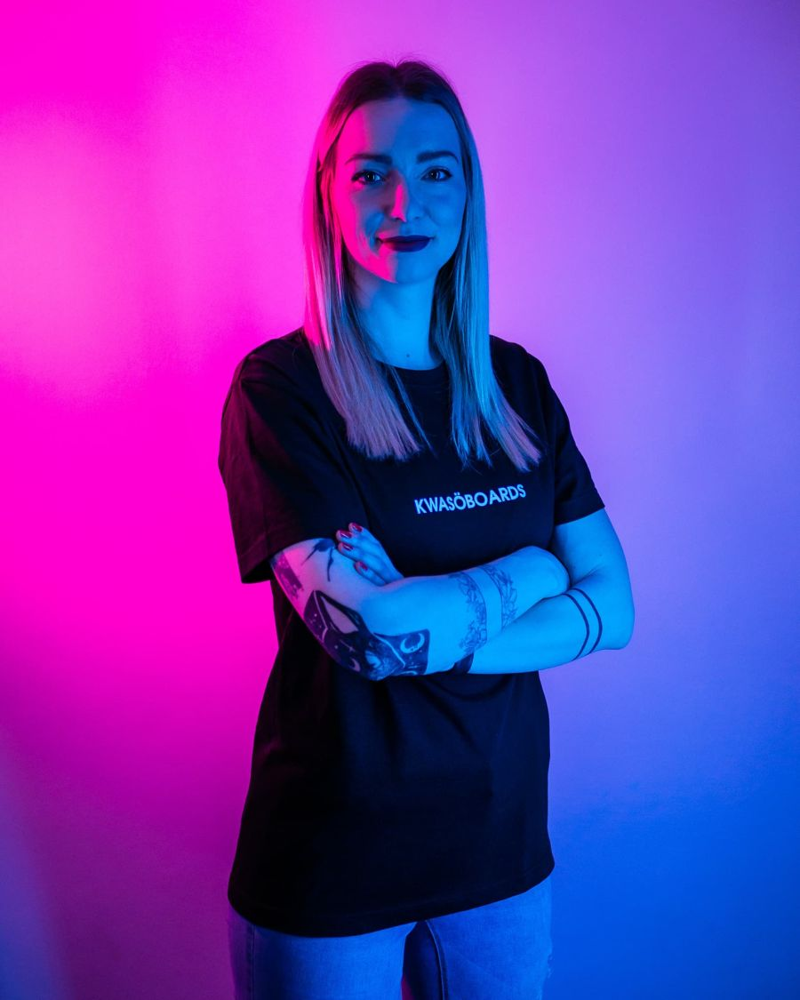
Ako už viete s nadpisu som bláznivá, a čo tým myslím?
Myslím tým, že okrem práce zvládam aj svoje koníčky a hobby, ktorých je dosť veľa, a ak Vás nenudím tak čítajte ďalej.
Moje hobby
Mám síce málo voľného času, ale snažím sa ho využívať naozaj efektívne. Kedže pochádzam spod Tatier milujem hory a prírodu. Niesom síce žiadny horolezec, ale mám veľmi rada dlhé prechádzky, malé nenáročné túry a spoznávanie nových miest na Slovensku.
Ďalším mojim dlhoročným hobby je snowboarding. Venujem sa mu od 13 rokov, vyskúšala som aj freestyle snowboarding, všetky tie skoky a tyčky, ale najviac ma baví freeride jazda v čerstvo napadanom snehu. Užiť si s priateľmi na horách slniečko, nespútanú prírodu, ticho a krásu tohto športu.
Pár mojich záberov si prezrite tu :)
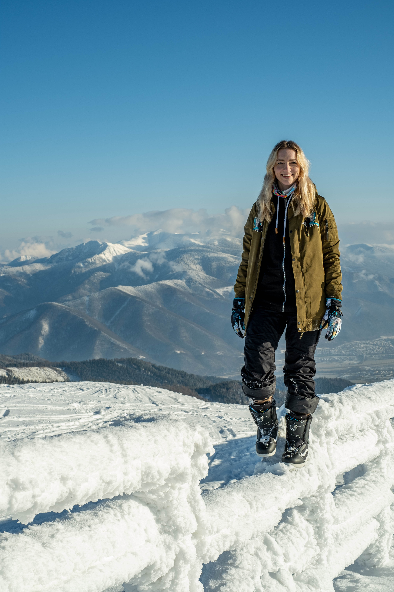 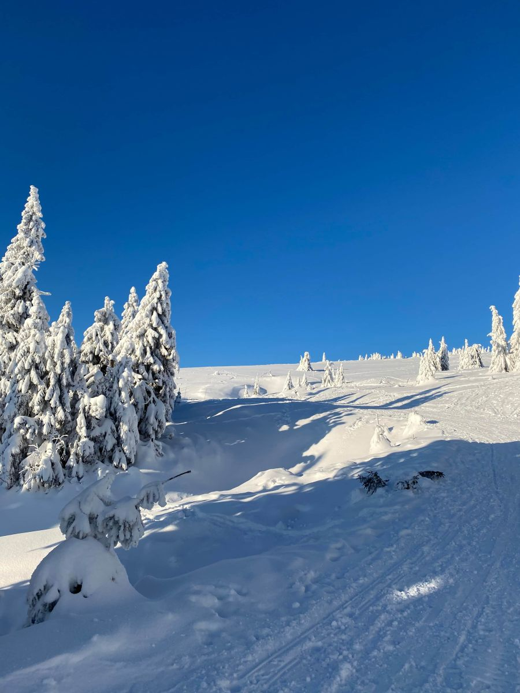 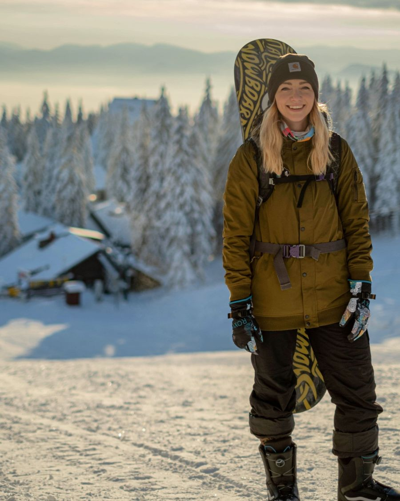
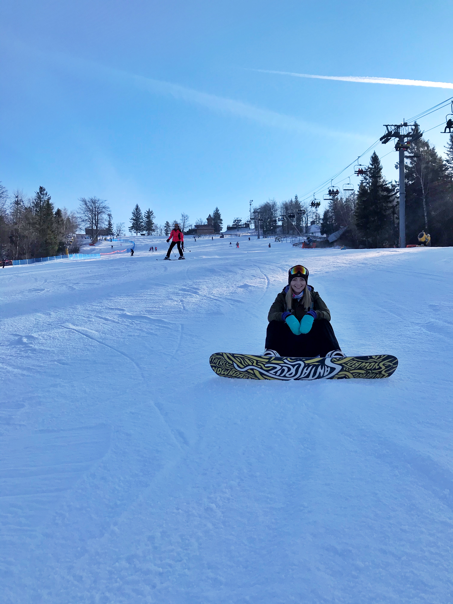
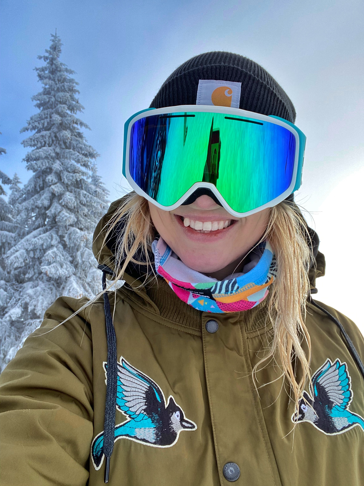
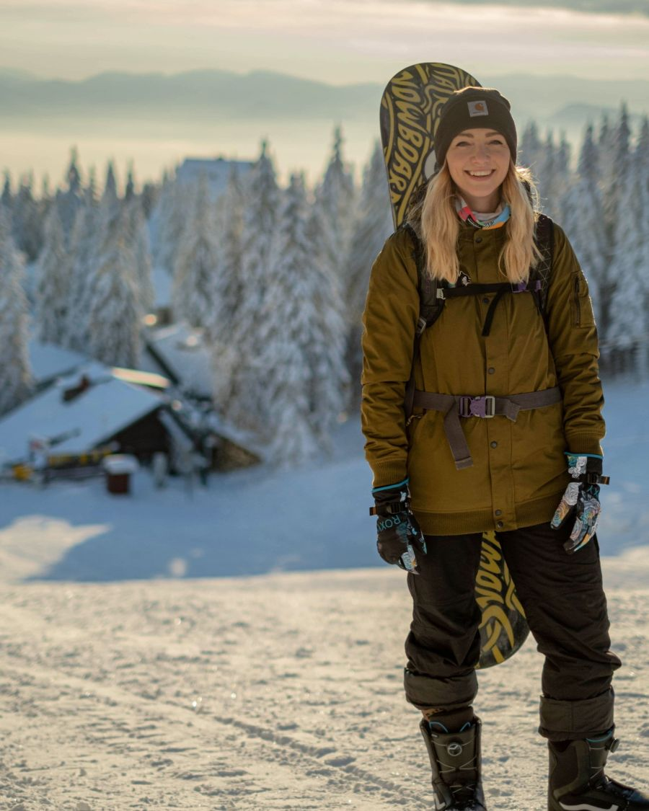
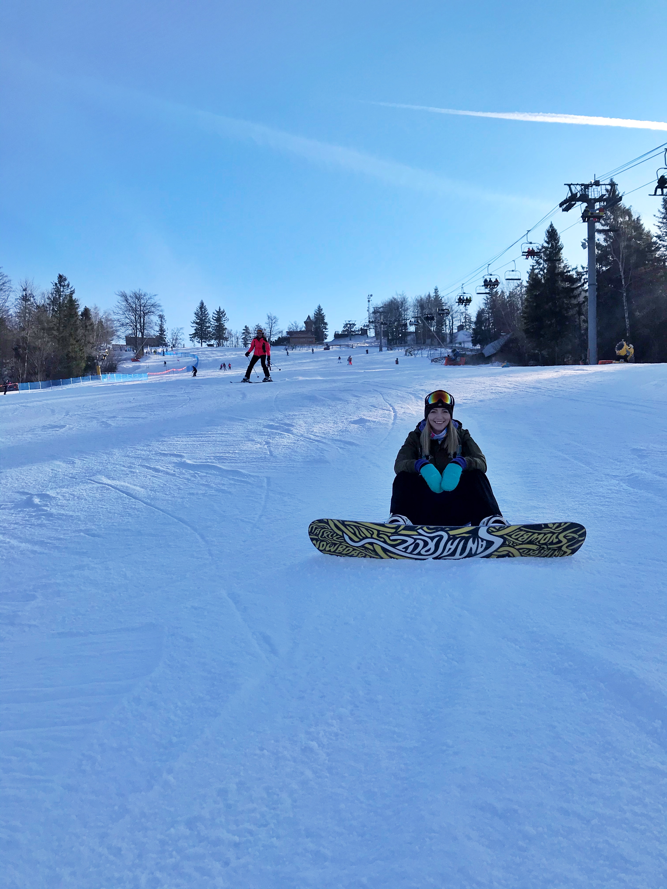
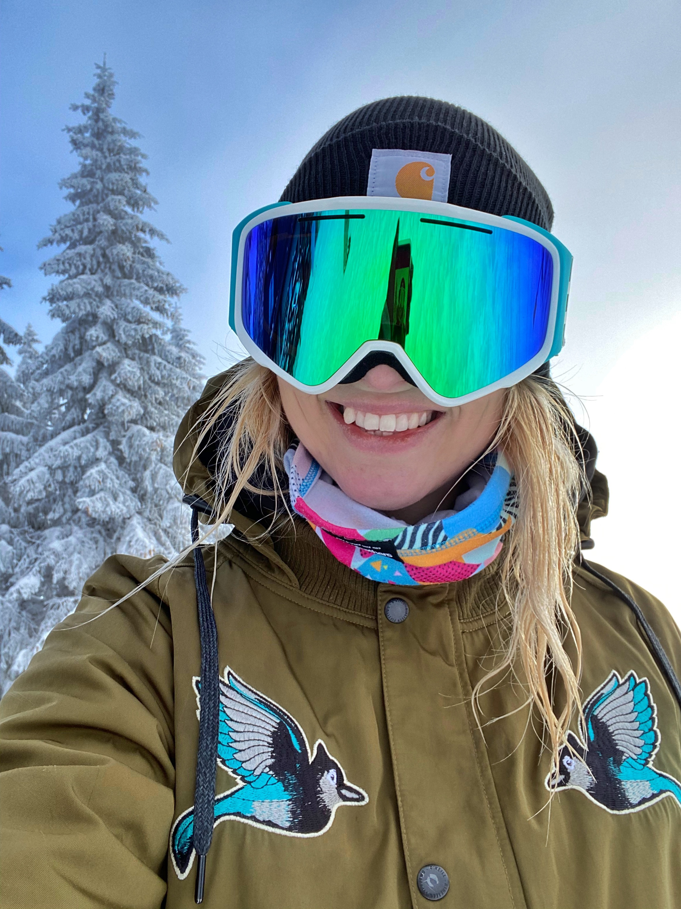
Najčerstvejším koníčkom a projektom, ktorému sa venujem je djing. Venujem sa mu síce veľmi krátko, vlastne rok teda od počiatku korony, kedy som aj ja zostala par týždňov na homeoffice a nemala som do čoho pichnúť. Za ten rok som sa do hudby a mixovania naozaj zamilovala. Mám rada letné festivaly a elektronickú hudbu, a jedným z mojich snov bolo tvorenie vlastnej hudby a hranie v kluboch. Hrávam v zoskupení PLAY. kde mi starší dji odovzdávajú cenné rady a pracujeme spolu na rôznych projektoch.
 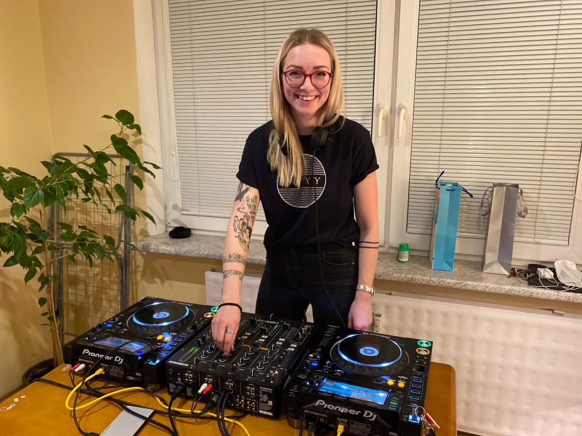
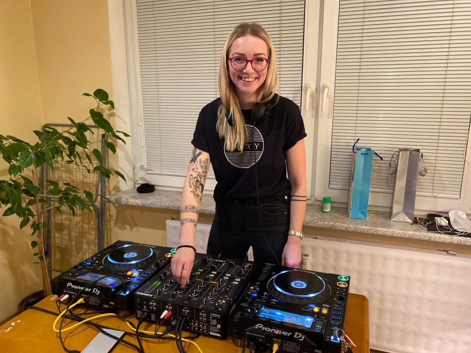
Moje meno je - - temnã - - dlhá historka prečo práve tak, ale takto ma nájdete hrať na živých vystúpeniach a na všetkých hudobných platformách. Ak Vás zaujíma moja hudba klikajte na odkazy nižšie.
Soundcloud kanál PLAY.
Mixloud kanál PLAY.
Ak ťa zaujíma viac, píš tu:
E-mail: sandra.galfyova@gmail.com